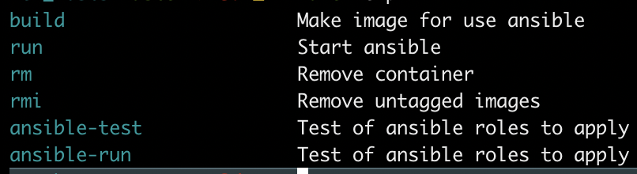
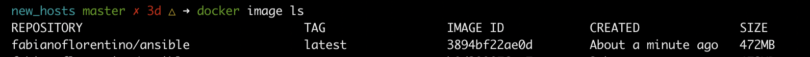
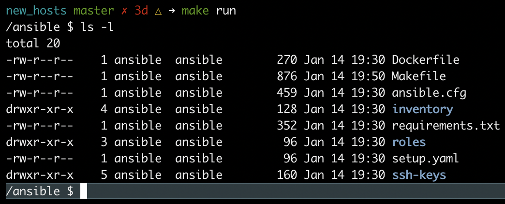
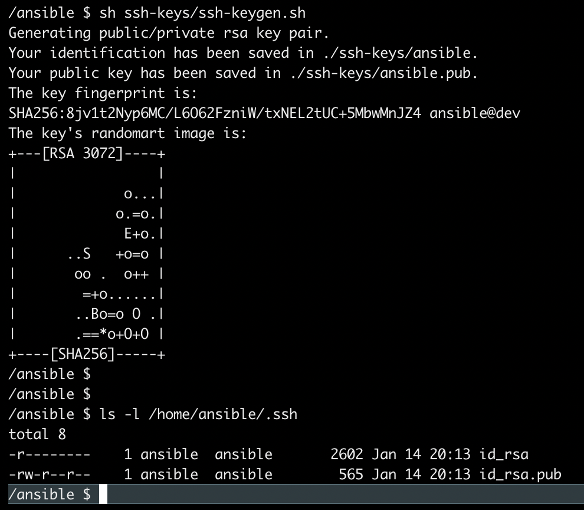
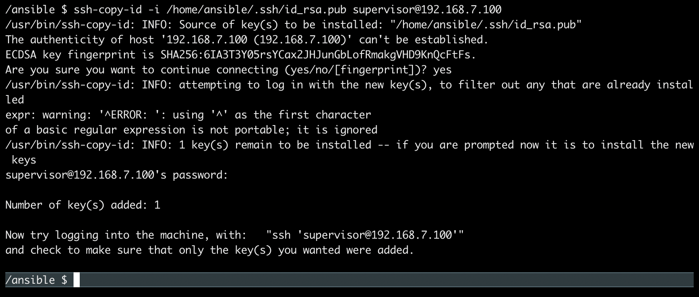
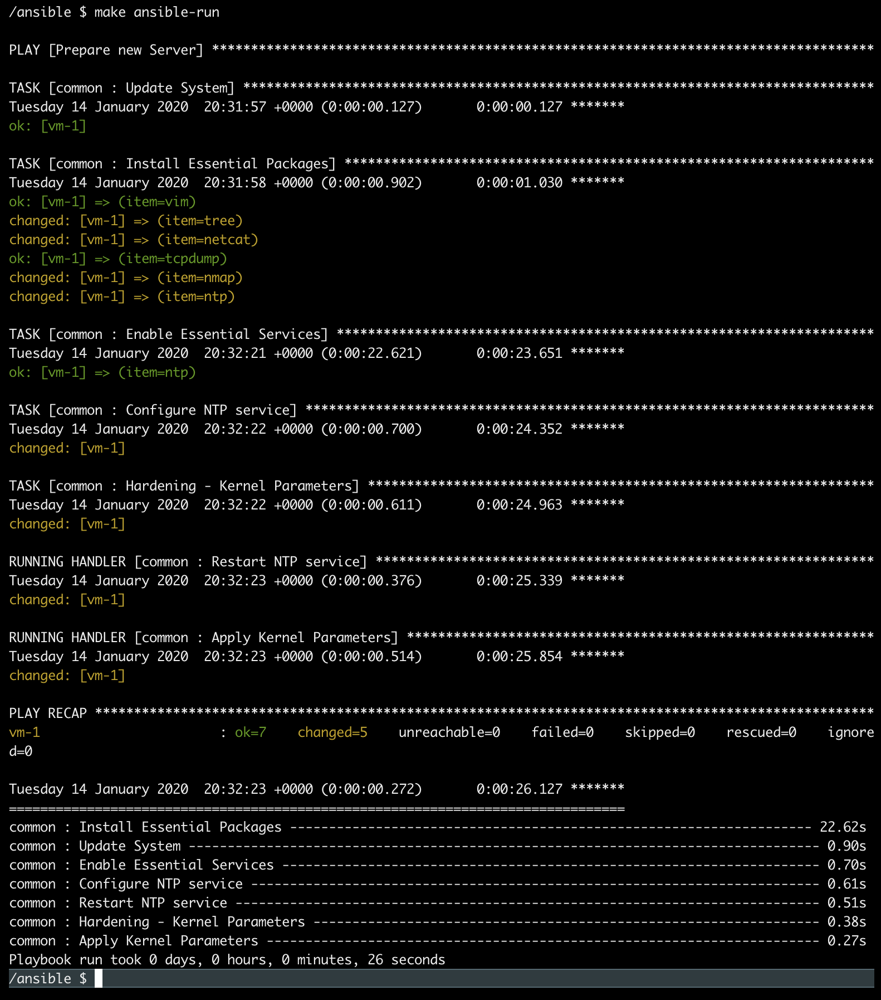

Criando um ambiente de desenvolvimento para o Ansible
A alguns dias atrás nosso mestre @gomex abriu uma thread no twitter sobre como é estar desenvolvendo infraestrutura hoje em dia pelo time de Ops Link e como isso é libertador, e de fato, é uma sensação sem igual para um Sysadmin.
Como várias pessoas comentaram eu também não pude deixar de participar. :D,
Na ocasião por coincidência estava desenvolvendo uma imagem de container docker para o ansible!
Mas por quê?
A ideia e criar um ambiente centralizado com o ansible instalado sem a necessidade de “sujar” o seu sistema operacional corrente com várias ferramentas que usamos durante o desenvolvimento de módulos, roles, tasks e tudo que permeia o desenvolvimento.
Nesse artigo vou escrever/descrever uma necessidade própria, então tome esse artigo como um guia e adapte para sua necessidade beleza?! :D
Vamos criar uma estrutura de arquivos e diretórios para desenvolver o projeto.
Crie um diretório qualquer e dentro desse diretório monte a estrutura de arquivos e diretórios proposto abaixo.
mkdir new_hosts
No final teremos algo assim.
new_hosts master 3d ➜ tree -L 5
.
├── Dockerfile
├── Makefile
├── ansible.cfg
├── inventory
│ ├── group_vars
│ │ └── all.yaml
│ └── invetory.ini
├── requirements.txt
├── roles
│ └── common
│ ├── handlers
│ │ └── main.yaml
│ ├── tasks
│ │ └── main.yaml
│ └── templates
│ ├── 11-hardening.conf.j2
│ └── ntp.conf.j2
├── setup.yaml
└── ssh-keys
└── ssh-keygen.sh
8 directories, 12 files
Requisitos
- Máquina Virtual
- Ubuntu Server
- SSH
Dockerfile
Com o dockerfile vamos construir a imagem docker com o ansible instalado para centralizar a execução e desenvolvimento do projeto de automação.
FROM python:3.7-alpine
COPY requirements.txt .
RUN apk add vim make sshpass openssh gcc g++ libffi-dev openssl openssl-dev \
&& adduser --disabled-password --gecos "" ansible \
&& pip install -r requirements.txt
USER ansible
WORKDIR /ansible
ENTRYPOINT [ "sh" ]
Makefile
Com o make criamos uma forma de centralizar e automatizar os comandos que utilizamos repetidas vezes ao longo do desenvolvimento.
.PHONY: help
.DEFAULT_GOAL := help
help:
@grep -E '^[0-9a-zA-Z_-]+:.*?## .*$$' $(MAKEFILE_LIST) | awk 'BEGIN {FS = ":.*?## "}; {printf "\033[36m%-25s\033[0m %s\n", $$1, $$2, $$3, $$4, $$5}'
build: ## Make image for use terraform
@docker build --no-cache -t fabianoflorentino/ansible .
run: ## Start Terraform
@docker run -it --name ansible -v ${PWD}:/ansible --entrypoint "" fabianoflorentino/ansible sh
rm: ## Remove container
@docker container rm -f ansible
rmi: ## Remove untagged images
@docker rmi -f $(docker images | grep "^<none>" |cut -d" " -f50)
ansible-test: ## Test of ansible roles to apply
@ansible-playbook -i inventory/invetory.ini -u supervisor -b -e ssh_connection_user=supervisor setup.yaml -C
ansible-run: ## Test of ansible roles to apply
@ansible-playbook -i inventory/invetory.ini -u supervisor -b -e ssh_connection_user=supervisor setup.yaml
ansible.cfg
Nesse arquivo determinamos alguns parametros para melhorar a execução do ansible.
[defaults]
gathering = smart
forks = 5
callback_whitelist = timer, mail, profile_tasks
host_key_checking = False
fact_caching_connection = /tmp/facts_cache
fact_caching = jsonfile
fact_caching_timeout = 7200
gather_subset=!hardware
error_on_missing_handler = True
sudo_flags = -H -S -n
[ssh_connection]
ssh_args = -C -o ControlMaster=auto -o ControlPersist=18000
control_path = %(directory)s/ansible-ssh-%%h-%%p-%%r
pipelining = True
inventory
Diretório onde configuramos os hosts que serão gerenciados pelo ansible.
mkdir -p inventory/group_vars
├── inventory
│ ├── group_vars
all.yaml
Aqui determinamos algumas variáveis que será utilizada pelo group de hosts [all] que fica no arquivo inventory.ini
vim inventory/group_vars/all.yaml
├── inventory
│ ├── group_vars
│ │ └── all.yaml
---
packages:
to_install:
- vim
- tree
- netcat
- tcpdump
- nmap
- ntp
to_remove:
-
services:
to_enable:
- ntp
to_disable:
ntp_servers:
- "server 0.br.pool.ntp.org"
- "server 1.br.pool.ntp.org"
- "server 2.br.pool.ntp.org"
- "server 3.br.pool.ntp.org"
hardening:
net_ipv6_conf_all_disable_ipv6: 1
net_ipv6_conf_default_disable_ipv6: 1
net_ipv6_conf_lo_disable_ipv6: 1
net_ipv4_conf_all_accept_source_route: 0
ipv4_conf_all_forwarding: 0
net_ipv4_conf_all_accept_redirects: 0
net_ipv4_conf_all_secure_redirects: 0
net_ipv4_conf_all_send_redirects: 0
net_ipv4_conf_all_rp_filter: 0
net_ipv4_icmp_echo_ignore_all: 0
inventory.ini
Arquivo com os hosts e grupo de hosts que o ansible irá gerenciar.
vim invetory/inventory.ini
├── inventory
│ └── invetory.ini
[all]
vm-1 ansible_host=192.168.7.100
requirements.txt
Lista com os módulos que serão instalados junto com o ansible para o funcionamento adequado.
# Note: this requirements.txt file is used to specify what dependencies are
# needed to make the package run rather than for deployment of a tested set of
# packages. Thus, this should be the loosest set possible (only required
# packages, not optional ones, and with the widest range of versions that could
# be suitable)
crypto
cryptography
ansible
roles
Diretório com o conjunto de roles/tasks que o ansible irá aplicar nos hosts gerenciados.
├── roles
│ └── common
│ ├── handlers
│ │ └── main.yaml
│ ├── tasks
│ │ └── main.yaml
│ └── templates
│ ├── 11-hardening.conf.j2
│ └── ntp.conf.j2
mkdir -p roles/common/{tasks,handlers,templates}
O diretório common é a role e conjunto de tasks que iremos utilizar para executar o projeto no host(vm) de desenvolvimento.
tasks - main.yaml
Conjunto de tasks que será executada nos hosts gerenciados pelo ansible.
- “Update System”
- “Install Essential Packages”
- “Enable Essential Services”
- “Configure NTP service”
- “Hardening - Kernel Parameters”
vim roles/common/tasks/main.yaml
├── roles
│ └── common
│ ├── tasks
│ │ └── main.yaml
---
- name: "Update System"
package:
state: latest
name: "*"
- name: "Install Essential Packages"
apt:
state: present
name: "{{ item }}"
loop: "{{ packages.to_install }}"
- name: "Enable Essential Services"
apt:
state: present
name: "{{ item }}"
loop: "{{ services.to_enable }}"
- name: "Configure NTP service"
template:
src: ntp.conf.j2
dest: /etc/ntp.conf
owner: root
mode: 0644
notify: "Restart NTP service"
- name: "Hardening - Kernel Parameters"
template:
src: 11-hardening.conf.j2
dest: /etc/sysctl.d/11-hardening.conf
owner: root
group: root
mode: 0644
notify: "Apply Kernel Parameters"
templates
Arquivos templates com variáveis para criar os arquivos de configuração dinamicamente.
├── roles
│ └── common
│ └── templates
│ ├── 11-hardening.conf.j2
│ └── ntp.conf.j2
vim roles/common/templates/11-hardening.conf.j2
-
11-hardening.conf
{% highlight jinja %} {% raw %}
{{ ansible_managed }}
ipv4.conf.all.forwarding = {{ hardening.ipv4_conf_all_forwarding}} net.ipv4.conf.all.accept_source_route = {{ hardening.net_ipv4_conf_all_accept_source_route}} net.ipv4.conf.all.accept_redirects = {{ hardening.net_ipv4_conf_all_accept_redirects }} net.ipv4.conf.all.secure_redirects = {{ hardening.net_ipv4_conf_all_secure_redirects }} net.ipv4.conf.all.send_redirects = {{ hardening.net_ipv4_conf_all_send_redirects }} net.ipv4.conf.all.rp_filter = {{ hardening.net_ipv4_conf_all_rp_filter }} net.ipv4.icmp_echo_ignore_all = {{ hardening.net_ipv4_icmp_echo_ignore_all }} net.ipv6.conf.all.disable_ipv6 = {{ hardening.net_ipv6_conf_all_disable_ipv6 }} net.ipv6.conf.default.disable_ipv6 = {{ hardening.net_ipv6_conf_default_disable_ipv6}} net.ipv6.conf.lo.disable_ipv6 = {{ hardening.net_ipv6_conf_lo_disable_ipv6 }}
{% endraw %} {% endhighlight %}
-
ntp.conf
vim roles/common/templates/ntp.conf.j2
{% highlight jinja %} {% raw %}
{{ ansible_managed }}
For more information about this file, see the man pages
ntp.conf(5), ntp_acc(5), ntp_auth(5), ntp_clock(5), ntp_misc(5), ntp_mon(5).
driftfile /var/lib/ntp/drift
Permit time synchronization with our time source, but do not
permit the source to query or modify the service on this system.
restrict default nomodify notrap nopeer noquery
Permit all access over the loopback interface. This could
be tightened as well, but to do so would effect some of
the administrative functions.
restrict 127.0.0.1 restrict ::1
Hosts on local network are less restricted.
#restrict 192.168.1.0 netmask 255.255.255.0 nomodify notrap
Use public servers from the pool.ntp.org project.
Please consider joining the pool (http://www.pool.ntp.org/join.html).
{% for server in ntp_servers %} {{ server }} {% endfor %}
logfile /var/log/ntp.log
#broadcast 192.168.1.255 autokey # broadcast server #broadcastclient # broadcast client #broadcast 224.0.1.1 autokey # multicast server #multicastclient 224.0.1.1 # multicast client #manycastserver 239.255.254.254 # manycast server #manycastclient 239.255.254.254 autokey # manycast client
Enable public key cryptography.
#crypto
includefile /etc/ntp/crypto/pw
Key file containing the keys and key identifiers used when operating
with symmetric key cryptography.
keys /etc/ntp/keys
Specify the key identifiers which are trusted.
#trustedkey 4 8 42
Specify the key identifier to use with the ntpdc utility.
#requestkey 8
Specify the key identifier to use with the ntpq utility.
#controlkey 8
Enable writing of statistics records.
#statistics clockstats cryptostats loopstats peerstats
Disable the monitoring facility to prevent amplification attacks using ntpdc
monlist command when default restrict does not include the noquery flag. See
CVE-2013-5211 for more details.
Note: Monitoring will not be disabled with the limited restriction flag.
disable monitor
{% endraw %} {% endhighlight %}
handlers
Tarefas configuradas para serem re-executadas caso tenha alguma alteração nas configurações das tasks.
├── roles
│ └── common
│ ├── handlers
│ │ └── main.yaml
vim roles/common/handlers/main.yaml
---
- name: "Restart NTP service"
systemd:
name: ntp
state: restarted
enabled: true
- name: "Apply Kernel Parameters"
shell: |
sysctl --system
register: kernel_parameters
setup.yaml
Playbook que executa o conjuntos de roles que será aplicado nos hosts(vm’s) gerenciados pelo ansible.
new_hosts master 3d ➜ tree -L 5
.
├── setup.yaml
vim new_hosts/setup.yaml
---
- name: "Prepare new Server"
hosts:
- all
roles:
- {role: common, tags: common}
ssh-keys
O ansible faz o gerenciamentos dos hosts através de comunicação ssh para todos os sistemas que o suportam.
A título de curiosidade no windows ele cria uma comunicação do tipo RPC(Chamada de Procedimento Remoto)
Criei esse script para gerar o par de chaves ssh que o ansible irá utilizar no container para gerenciar os hosts de destino.
new_hosts master 3d ➜ tree -L 5
.
└── ssh-keys
└── ssh-keygen.sh
vim ssh-keys/ssh-keygen.sh
#!/usr/bin/env sh
mkdir /home/ansible/.ssh
ssh-keygen -t rsa -N '' -f ./ssh-keys/ansible -C ansible@dev
cp -rf ./ssh-keys/ansible /home/ansible/.ssh/id_rsa
cp -rf ./ssh-keys/ansible.pub /home/ansible/.ssh/id_rsa.pub
chmod 400 /home/ansible/.ssh/id_rsa
chmod 644 /home/ansible/.ssh/id_rsa.pub
Ufa!
Depois de montar toda a nossa estrutura, acredito que temos algo assim
.
├── Dockerfile
├── Makefile
├── ansible.cfg
├── inventory
│ ├── group_vars
│ │ └── all.yaml
│ └── invetory.ini
├── requirements.txt
├── roles
│ └── common
│ ├── handlers
│ │ └── main.yaml
│ ├── tasks
│ │ └── main.yaml
│ └── templates
│ ├── 11-hardening.conf.j2
│ └── ntp.conf.j2
├── setup.yaml
└── ssh-keys
└── ssh-keygen.sh
Build
No mesmo nível onde está o nosso dockerfile vamos construir a imagem com o ansible instalado.
Lembra do Makefile? então, vamos utilizar bastente ele agora.
make help
">
make build
Esse commando está fazendo o mesmo que:
docker build --no-cache -t fabianoflorentino/ansible .
Melhor né? :D, automação da automação!
e assim para todos os comandos que iremos utilizar, para verificar a sintaxe dos comandos volta lá no arquivo Makefile e veja o que cada comando está executando beleza? :D
No final se tudo ocorreu bem teremos a seguinte mensagem:
Successfully built 3894bf22ae0d
Successfully tagged fabianoflorentino/ansible:latest
">
Ansible
Com a imagem pronta vamos iniciar o container para utilizamos o ansible de forma isolada em um container mas interagindo com o nosso projeto.
make run
">
Como de dentro do container estamos conseguindo acessar os arquivos do projeto?
A forma como estamos executando o container. Na execução estamos montando o diretório corrente dentro do container e acessamos o container através do shell sh.
docker run -it --name ansible -v ${PWD}:/ansible --entrypoint "" fabianoflorentino/ansible sh
SSH
De dentro do container execute o script que cria o par de chaves ssh para comunicação com os hosts.
sh ssh-keys/ssh-keygen.sh
">
Transfira a chave ssh publica para o(s) host(s) que serão gerenciados.
ssh-copy-id -i /home/ansible/.ssh/id_rsa.pub supervisor@192.168.7.100
">
Teste a comunicação com o(s) host(s)
ansible -i inventory/invetory.ini all -u supervisor -b -m ping
">
Deploy da VM
Com a comunicação estabelecida podemos aplicar a(s) roles que foi desenvolvida nesse projeto no caso a role common.
make ansible-test
Esse comando irá fazer o teste de execução das tasks.
">
O que estiver em amarelo o ansible irá executar a alteração o que estiver em verde é porque a ação esperada já foi executada ou está de acordo com a task.
Feito o teste, podemos aplicar realmente as alterações no host(s)
make ansible-run
">
Idempotência
Uma boa prática é sempre buscar Idempotência na execução da sua gerencia de configuração, uma vez aplicada aquele conjunto de configuração ele só poderá ser modificado caso aja modificação no código do seu projeto, do contrário não importa quantas vezes você executar o ansible, ele sempre terá que aplicar as mesmas configurações previamente configuradas.
make ansible-run
">
Demo

Conclusão
Como mencionanei no começo do artigo o @gomex iniciou um thread muito bacana sobre como nós antigos Sysadmin(Ops) agora SRE’s, DevOps Engineer, Eng. DevOps e afins não importa o nome, temos a satisfação de estar entregando infraestrutura como código, criando ambiente de desenvolvimento como o citado ao longo desse artigo.
É muito legal ver uma área admirada por muitos no mundo de tecnologia se transformar radicalmente. Bom,espero ajudar bastante gente com esse artigo.
Ah! ia me esquecendo, parte do que demonstrei aqui com o Makefile aprendi pertubando muito o @igorsouza vlw d++ mano :D!
Projeto: http://bit.ly/2Ns2ZRs